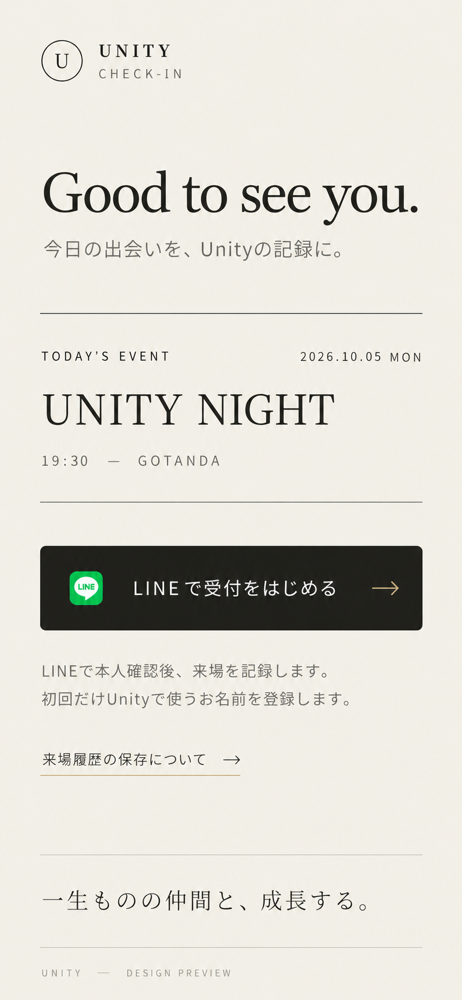
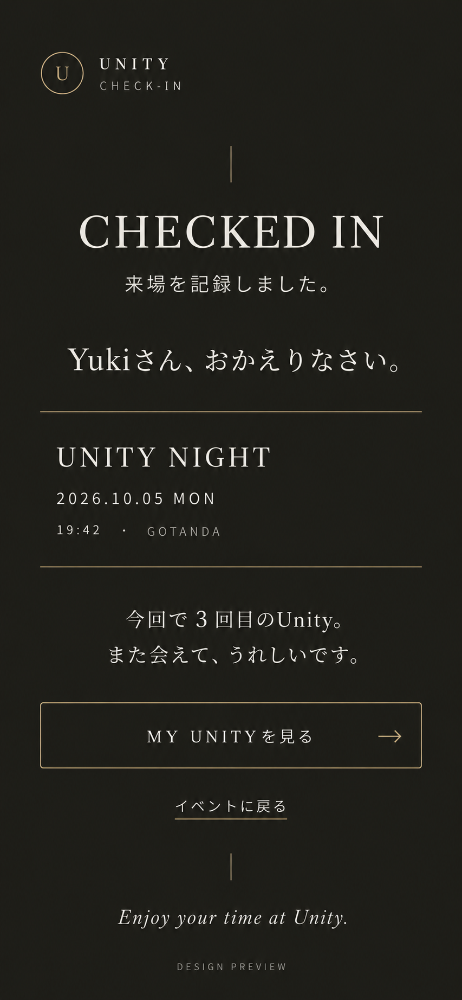
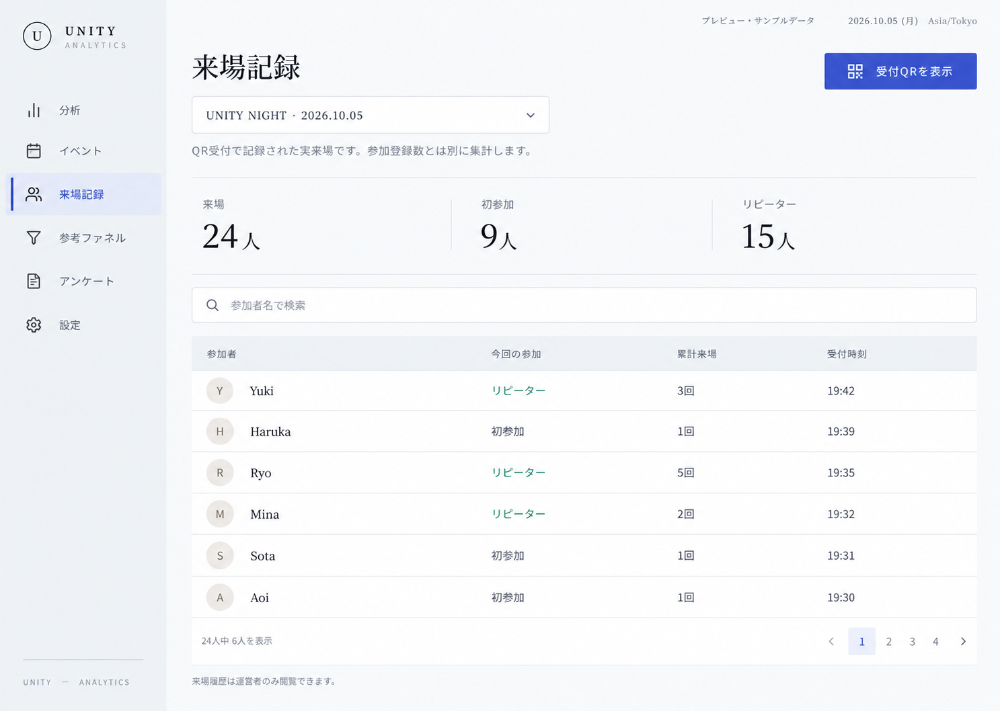

UNITY · DESIGN PREVIEW
QR受付から、来場の記録へ。
参加者向けの受付・完了画面と、Unity Analyticsに追加する運営向けの来場一覧です。
デザイン画像のプレビューです。名前・人数は架空のサンプルで、LINE認証やデータ保存はまだ動作しません。
1. LINE受付の入口
会場のQRを読み取った後、イベントを確認し、LINEで本人確認を始めます。


画像を大きく開く ↗2. CHECK-IN完了
来場が記録されたことを伝え、参加回数とMY UNITYへの入口を表示します。


画像を大きく開く ↗3. 運営側の来場一覧
イベントごとの実来場、初参加・リピーター、参加者ごとの累計来場と受付時刻を確認する画面です。

画像を大きく開く ↗